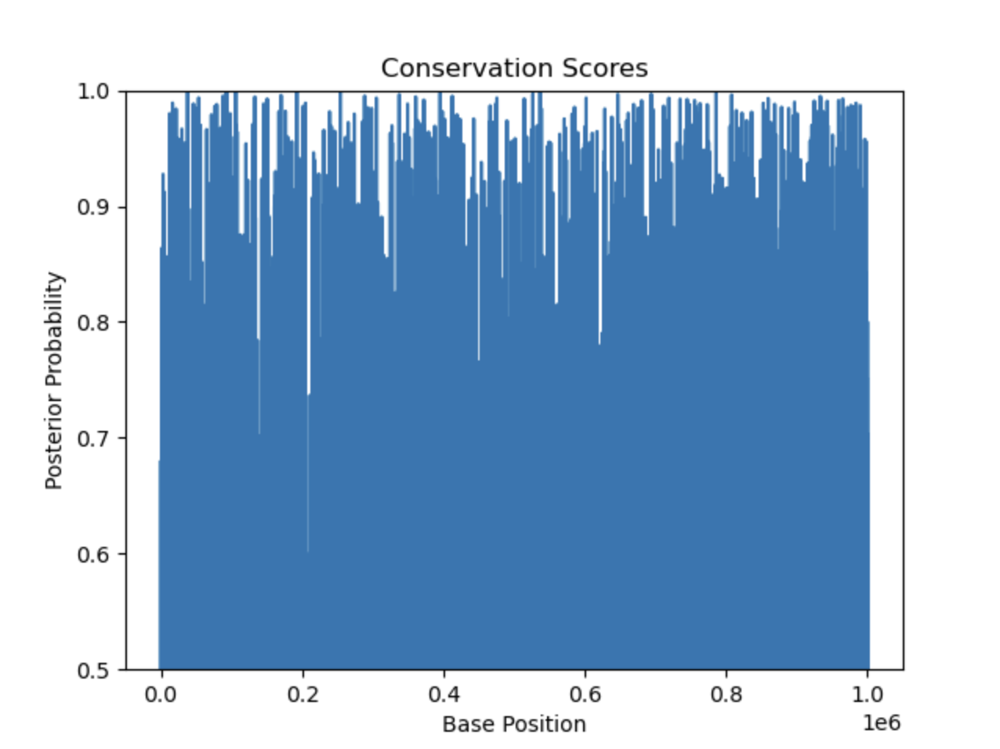

PlateDate is a dynamic web platform designed to help users effortlessly discover recipes tailored to group preferences, making meal planning collaborative and enjoyable. The platform allows multiple users to input their dietary preferences, restrictions, and favorite ingredients or dishes, generating a personalized set of recipe recommendations that satisfy everyone in the group.
The front-end features a responsive design built with JavaScript, HTML, and CSS, ensuring a seamless user experience. Advanced natural language processing (NLP) techniques were applied to analyze and retrieve over 500,000 recipes from a diverse database. Users can further refine results by sorting recipes based on preparation/cooking time as well as by user ratings, enhancing convenience and usability.
To get the best results on PlateDate, users input a combination of dietary restrictions/preferences (e.g. vegetarian, gluten-free) and the number of people (1-5). Each person can then specify their preference for food, whether it's a recipe, a cuisine, or an ingredient. The system processes these inputs to provide curated recipe recommendations that balance all preferences.
The output includes:
For example, inputting 4 people with the requests "pasta," "meat," "cheese," "broccoli" gives recipes like "pasta al forno" with broccoli or "salmon pasta bake." Another input is 3 people with requests "chicken," "rice," "lemon," which gives recipes like "baked chicken, lemon and pea risotto" and "lemon chicken rice." Inputting these same requests with the vegetarian option checked changes the recipes outputted to be "garlicky rice" and "lemon rice with herbs." Note that although "chicken" may still appear in the query relevance pie chart due to recipe comments (e.g. "good with chicken"), all recipes are guaranteed to meet the vegetarian criteria.
PlateDate was developed as part of a team of five, with each member contributing to different aspects of the project. As a leader, I took charge of planning meetings, setting clear objectives, and dividing tasks based on each team member's strengths and expertise, ensuring an efficient workflow and effective use of resources. My primary responsibilities included designing and implementing the front-end interface using JavaScript, HTML, and CSS, ensuring a responsive and user-friendly design. I also contributed to the back-end development, where I integrated features such as a query relevance pie chart, which visually represents how much each query corresponded to each result, and the ability to order recipes by preparation time, cooking time, and ratings. These features enhanced hte platform's usability and personalization. Collaboration was facilitated through GitHub for version control. We held regular sprints to ensure consistent progress and efficient integration of front-end and back-end components.
Phylogenetic Hidden Markov Model is a computational biology project that leverages Hidden Markov Models (HMMs) and phylogenetic analysis to identify conserved DNA regions across different species. These conserved regions often indicate biologically significant sequences that have been preserved through evolution due to their critical functional roles.
The project involved implementing dynamic programming algorithms to efficiently process genomic data and identify patterns of conservation. By integrating phylogenetic trees, the model accounted for the evolutionary relationships between species, enabling a more nuanced understanding of sequence conservation. This approach provided insights into how selective pressures shape genomes and revealed potential areas for further study in functional genomics.
Advanced computational biology techniques, such as multiple sequence alignment and probabilistic modeling, were applied to handle the complexities of genomic data. The results demonstrated how the combination of HMMs and phylogenetic analysis can uncover evolutionary patterns that are not easily detectable with traditional methods.
To run the Phylo-HMM program on your computer, follow these steps:
git clone https://github.com/cwmitz/phylo-hmm.git.
pip install -r requirements.txt to install dependencies.
python program.py. The process may take about one minute.
sequences.fasta: Contains aligned DNA sequences.probabilities.png: Displays posterior probabilities of conservation.Aligned Sequences: The sequences.fasta file contains the aligned DNA sequences
generated during the analysis. These sequences highlight conserved regions, which are often
biologically significant.
Posterior Probabilities Graph: The probabilities.png graph visualizes the
likelihood of DNA conservation across base positions, calculated using a combination of phylogenetic
models and Hidden Markov Models.

Graph Explanation:For example, a peak near a specific base position might indicate a conserved functional element like a coding region, whereas valleys suggest areas with higher variability, possibly indicating non-coding or less functional regions.
The Phylogenetic Hidden Markov Model project was a collaborative effort involving a team of three, where each member contributed unique skills to achieve the project's goals. My primary responsibilities included implementing dynamic programming algorithms to efficiently identify conserved DNA regions and integrating phylogenetic trees into the analysis to account for evolutionary relationships between species. Additionally, I worked on refining the Hidden Markov Model parameters to improve the accuracy of the predictions.
As a team, we divided tasks based on our areas of expertise. I collaborated closely with one teammate, who focused on preprocessing genomic datasets and building the phylogenetic trees, and another who worked on visualizing the results and summarizing biological insights. We used GitHub for version control, ensuring seamless integration of code, and held regular meetings to align on objectives and address challenges. This collaborative workflow allowed us to combine our strengths effectively, resulting in a robust model that demonstrated how computational methods could reveal significant evolutionary patterns.